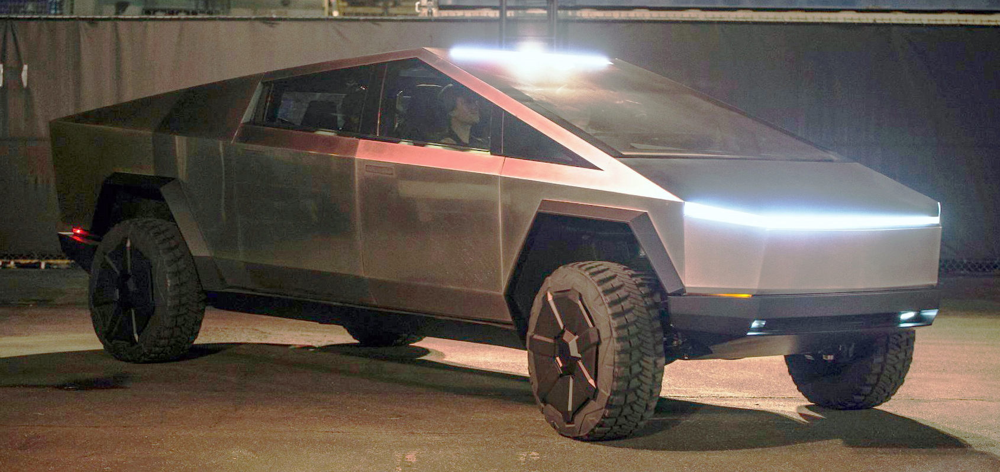
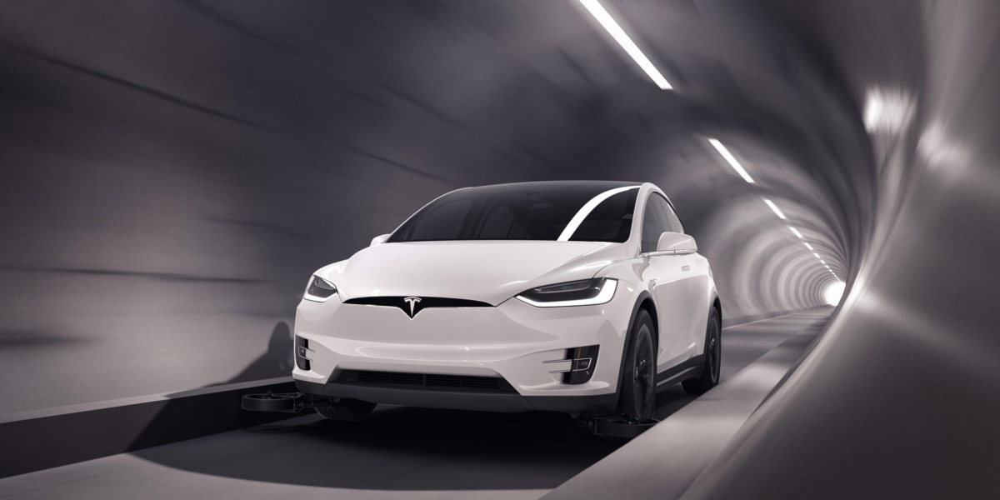
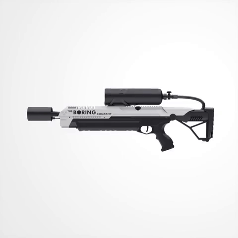

Zip2
In 1995, Musk and his brother, Kimbal, started Zip2, a web software company, with money raised from a small group of angel investors. The company developed and marketed an internet city guide for the newspaper publishing industry, with maps, directions and yellow pages, with the vector graphics mapping and direction code being implemented by Musk in Java. Musk obtained contracts with The New York Times and the Chicago Tribune, and persuaded the board of directors to abandon plans for a merger with CitySearch. Musk's attempts to become CEO were thwarted by the board. Compaq acquired Zip2 for US$307 million in cash in February 1999. Musk received US$22 million for his 7 percent share from the sale.
X.com and PayPal
In March 1999, Musk co-founded X.com, an online financial services and e-mail payment company, with US$10 million from the sale of Zip2. One year later, the company merged with Confinity, which had a money-transfer service called PayPal. The merged company focused on the PayPal service and was renamed PayPal in 2001. Musk was ousted in October 2000 from his role as CEO (although he remained on the board) due to disagreements with other company executives over his desire to move PayPal's Unix-based infrastructure to Microsoft Windows. In October 2002, PayPal was acquired by eBay for US$1.5 billion in stock, of which Musk received US$165 million. Before its sale, Musk, who was the company's largest shareholder, owned 11.7% of PayPal's shares.
In July 2017, Musk purchased the domain X.com from PayPal for an undisclosed amount, stating that it has sentimental value to him.
SpaceX

In 2001, Musk conceived Mars Oasis, a project to land a miniature experimental greenhouse on Mars, containing food crops growing on Martian regolith, in an attempt to reawaken public interest in space exploration. In October 2001, Musk traveled to Moscow with Jim Cantrell (an aerospace supplies fixer), and Adeo Ressi (his best friend from college), to buy refurbished Dnepr Intercontinental ballistic missiles (ICBMs) that could send the envisioned payloads into space. The group met with companies such as NPO Lavochkin and Kosmotras; however, according to Cantrell, Musk was seen as a novice and was consequently spat on by one of the Russian chief designers.
The group returned to the United States empty-handed. In February 2002, the group returned to Russia to look for three ICBMs, bringing along Mike Griffin. Griffin had worked for the CIA's venture capital arm, In-Q-Tel, as well as NASA's Jet Propulsion Laboratory, and was just leaving Orbital Sciences, a maker of satellites and spacecraft.
The group had another meeting with Kosmotras and were offered one rocket for US$8 million. Musk considered the price too high, and stormed out of the meeting. On the flight back from Moscow, Musk realized that he could start a company that could build the affordable rockets he needed. According to early Tesla and SpaceX investor Steve Jurvetson, Musk calculated that the raw materials for building a rocket were only 3 percent of the sales price of a rocket at the time.
It was concluded that, in theory, by applying vertical integration and the modular approach employed in software engineering, SpaceX could cut launch price by a factor of ten and still enjoy a 70-percent gross margin. Ultimately, Musk ended up founding SpaceX with the long-term goal of creating a true spacefaring civilization.
Tesla
Tesla, Inc. (originally Tesla Motors) was incorporated in July 2003 by Martin Eberhard and Marc Tarpenning, who financed the company until the Series A round of funding. Both men played active roles in the company's early development prior to Elon Musk's involvement. Musk led the Series A round of investment in February 2004, joining Tesla's board of directors as its chairman. All three, along with J. B. Straubel, were inspired by the earlier AC Propulsion tzero electric roadster prototype. Musk took an active role within the company and oversaw Roadster product design at a detailed level, but was not deeply involved in day-to-day business operations. Following the financial crisis in 2008 and after a series of escalating conflicts in 2007, Eberhard was ousted from the firm. Musk assumed leadership of the company as CEO and product architect in 2008, positions he still holds today. As of 2019, Elon Musk is the longest tenured CEO of any automotive manufacturer globally.
Tesla's "master plan", as iterated by Musk in 2006 was:
Build sports car. Use that money to build an affordable car. Use that money to build an even more affordable car. While doing above, also provide zero-emission electric power generation options.
The Boring Company
On December 17, 2016, while stuck in traffic, Musk tweeted "[I] am going to build a tunnel boring machine and just start digging ..." The company was named 'The Boring Company' (TBC). On January 21, 2017, Musk tweeted "Exciting progress on the tunnel front. Plan to start digging in a month or so." As of January 26, 2017, discussions with regulatory bodies had begun.
In February 2017, the company began digging a 30-foot (9.1 m) wide, 50-foot (15 m) long, and 15-foot (4.6 m) deep "test trench" on the premises of Space X's offices in Los Angeles, since the construction requires no permits. Musk had said in early 2017 that a 10-fold decrease in tunnel boring cost per mile is necessary for economic feasibility of the proposed tunnel network. The tunnel width is optimized for electric vehicles only, which avoids complications of exhaust venting with internal combustion engines.
By late 2018, TBC had active construction, approved plans in place, or an operational tunnel in several areas of the United States: Baltimore, Chicago and Los Angeles. TBC provided an update on the state of their technology and product line when they opened to the public their first mile-long test tunnel in Hawthorne, California, on 18 December 2018, saying it has been a proof-of-concept for the technology. TBC has claimed that design is complete for their next tunnel boring machine (TBM), Prufrock, and that assembly and engineering testing would begin in 2019. In February 2020 TBC released images of a working Prufrock prototype.

As merchandising, the company sold 20,000 "flamethrowers" in 2018, inspired by the movie Spaceballs.